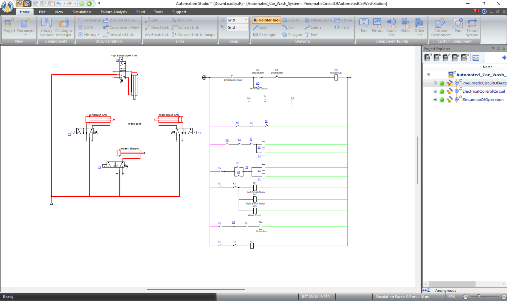
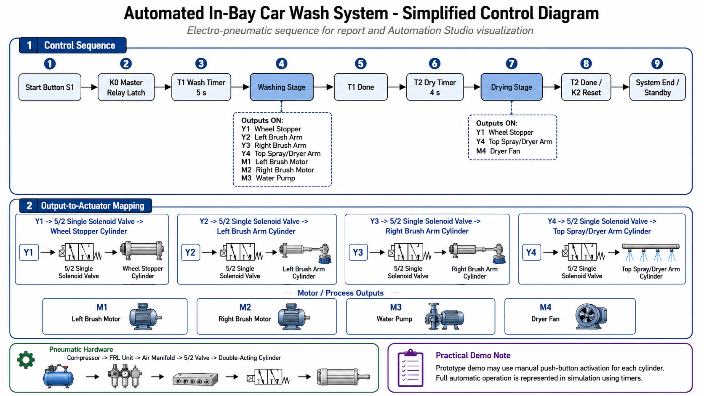
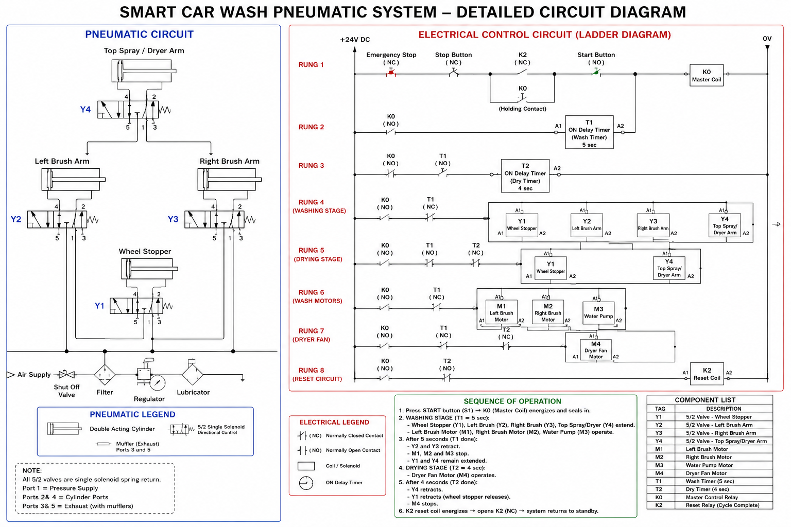
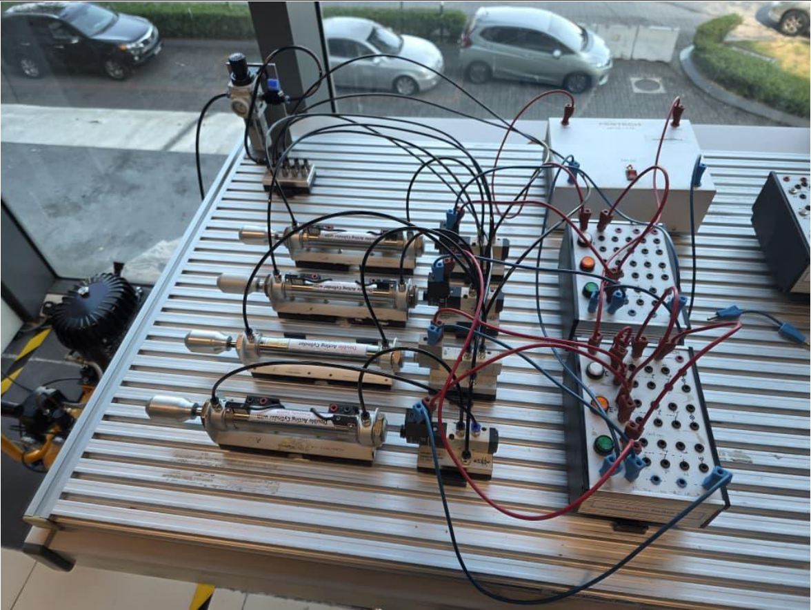

{kind=link}
Wheel Stopper
A pneumatic cylinder represents the mechanism used to hold the vehicle in position during the automated cycle and release it after completion.
INDUSTRIAL AUTOMATION • PLC LOGIC • PNEUMATICS
An academic electro-pneumatic automation project designed to coordinate washing and drying stages using sequential control logic, timers, pneumatic actuators, motors, and safety controls. The complete automated sequence was modelled and simulated using Automation Studio.

Academic Automation Project01 • OVERVIEW
The project models an automated in-bay car wash using electrical control logic and pneumatic actuation. The system coordinates a wheel stopper, left and right brush arms, a top spray and dryer arm, brush motors, a water pump, and a dryer fan.
Rather than controlling each actuator independently, the system was designed around a timed sequence in which washing and drying stages activate, transition, and reset automatically.
02 • OBJECTIVE
The objective was to design a sequential control system capable of progressing through a complete automated car-wash cycle while coordinating pneumatic cylinders and electrical loads.
The design also incorporates Start, Stop, and Emergency Stop control, timing stages, holding logic, and a reset sequence so that the system can return to standby after completing a cycle.
03 • CONTROL SEQUENCE
The Start input energizes the master control relay and establishes the holding condition for the automated cycle.
The wheel stopper and wash arms extend while the left and right brush motors and water pump operate during the timed washing period.
After the wash timer completes, the brush arms retract and the washing motors stop while the system transitions into the drying stage.
The top arm remains positioned while the dryer fan operates for the second timed interval.
When the drying timer completes, the remaining actuators return to their initial states and the control system resets for the next cycle.

04 • ELECTRO-PNEUMATIC DESIGN
A pneumatic cylinder represents the mechanism used to hold the vehicle in position during the automated cycle and release it after completion.
Independent pneumatic cylinders position the left and right washing assemblies during the wash stage.
A separate pneumatic actuator positions the upper assembly used during the washing and drying portions of the sequence.
Single-solenoid spring-return directional valves control compressed-air flow to the double-acting pneumatic cylinders.
Two brush motors and a water pump operate during the timed washing stage.
The dryer fan operates during the second timing stage after the washing process has ended.
05 • CIRCUIT DESIGN
The complete design combines the pneumatic actuator circuit with relay-style ladder control, timers, motor outputs, and the reset sequence.
Representing both domains together made it possible to reason about the electrical control decisions and the resulting mechanical movements as parts of the same automation system.

06 • SIMULATION
Automation Studio was used to model the pneumatic circuit and electrical control logic together. This allowed actuator states and sequence transitions to be observed during simulated operation.
The simulation provided a way to test how timers, contacts, control relays, solenoid outputs, and pneumatic actuators interacted throughout the wash cycle.
07 • PRACTICAL PNEUMATICS
Pneumatic components were also explored using physical training hardware, providing hands-on experience with cylinders, directional valves, compressed-air connections, and actuator operation.
The physical setup was used to demonstrate pneumatic actuator behaviour, while the complete timed automatic sequence was represented through the Automation Studio simulation.

08 • CHALLENGES
Outputs could not simply be activated independently. Each stage depended on timer states and previous control conditions so that washing, drying, and reset operations occurred in the correct order.
The electrical circuit represented control decisions while the pneumatic circuit represented physical motion. Both needed to correspond correctly for the simulated system to behave as intended.
Completing the process required more than stopping the motors. Pneumatic actuators also needed to retract and the control circuit needed to reset so the next cycle could begin from a predictable state.
09 • RESULT
The completed design demonstrated how electrical control logic, pneumatic actuators, timers, and motor outputs could be coordinated into one sequential industrial automation process.
10 • WHAT I LEARNED
This project helped connect ladder-style electrical logic with the physical behaviour of pneumatic actuators. It reinforced how relays, contacts, timers, valves, and cylinders can be combined to represent an automated industrial process.
It also demonstrated the importance of designing reset and safety conditions rather than focusing only on the normal operating sequence.
{kind=link}
{kind=link}
{kind=link}